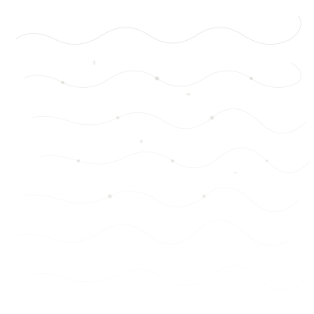

Descarga
Lichen Dreams para Android
Descarga directa. Compatible con dispositivos Android.
Sobre la aplicación
¿Qué es Lichen Dreams?
Una aplicación móvil que utiliza líquenes como bioindicadores para analizar la calidad del aire mediante inteligencia artificial. La IA evalúa el estado visual del líquen en tres categorías: saludable, contaminado o no identificado.
Bioindicación con IA
Los líquenes son organismos simbióticos sensibles a las condiciones ambientales. Lichen Dreams analiza visualmente su estado mediante IA y lo utiliza como indicador ambiental cualitativo. La IA no identifica especies taxonómicas.
Mapa ambiental colaborativo
Observaciones georreferenciadas propias y de la comunidad, con zonas de transición derivadas de la proximidad entre líquenes saludables y contaminados.
Lichenpedia e Historial
Enciclopedia educativa sobre líquenes y bioindicación, más bitácora personal con filtros, estadísticas y perfil ambiental (radar).

Funciones
Características
Funciones principales de Lichen Dreams.


Capturas
Explora la aplicación
Una mirada a la interfaz y funciones de Lichen Dreams.

Proceso
¿Cómo funciona?
De la captura al conocimiento en cuatro pasos.


Lanzamiento
Versión actual
Detalles de la versión actual del proyecto.
Historial
Historial de versiones
Publicaciones oficiales a medida que estén disponibles.

Preguntas
Preguntas frecuentes
Respuestas a las consultas más comunes sobre Lichen Dreams.